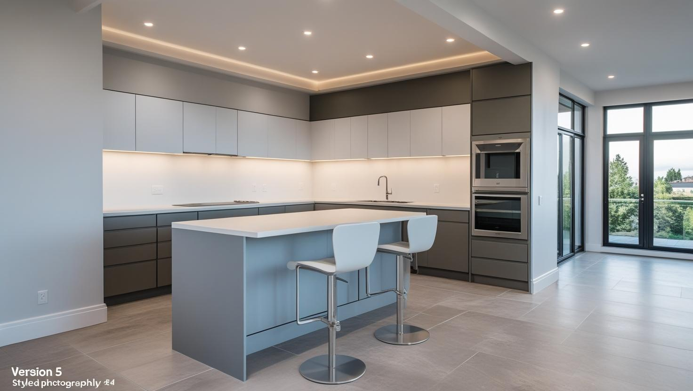
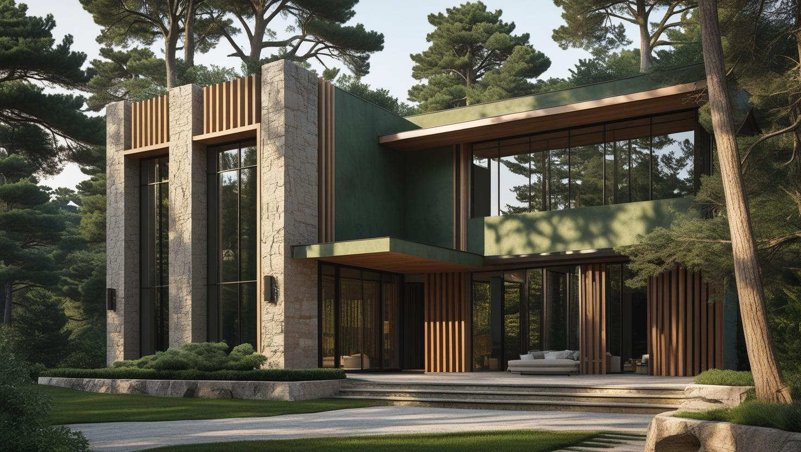
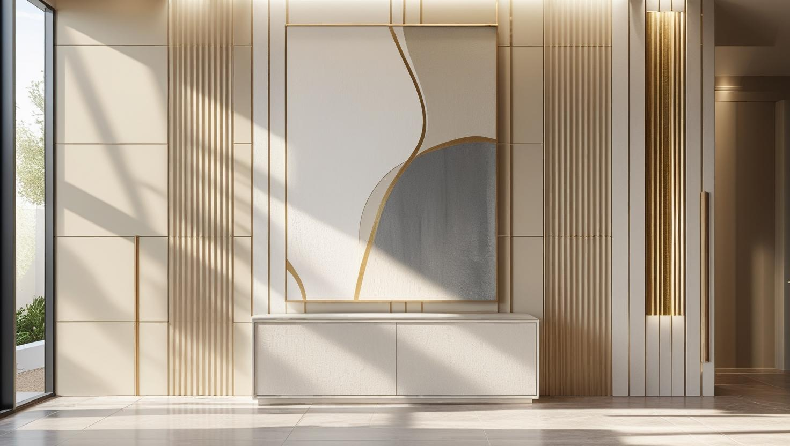

İstanbul Kartal Profesyonel Boya Ustası
Kartal boya badana işlerinde yeni teslim daireleri, Yakacık ve Soğanlık'taki eski yapıları, büro ve muayenehaneleri 20 yıllık tecrübemizle ayrı ayrı planlıyoruz.
Kartal'da Boya Badana: Yeni Teslim Daire mi, Eski Yapı mı?
Kartal boyacı talebinin arkasında bugün iki farklı iş tipi var. Bir yanda kentsel dönüşümle yenilenen bölgelerde yeni teslim alınmış daireler, diğer yanda Yakacık, Soğanlık ve Petrol İş çevresindeki eski yapı stoğu. Bu ikisi arasında yüzey hazırlığı bakımından ciddi fark var.
Yeni teslim dairede duvar genelde alçı sıva ve düzgün; iş astar ve kat uygulamasına odaklanıyor, hızlı ilerliyor. Buna karşılık yeni binalarda ilk yıl içinde ince yapısal oturma çatlakları görülebiliyor; bunları boyamadan önce uygun dolgu ile kapatmak, bir yıl sonra aynı yerin yeniden çatlamaması için önemli. Eski yapıda ise raspa, derz ve tavan kenarı onarımı işin ana kalemi.
Kartal boya ustası olarak boş daire boyamayı da planlıyoruz — taşınmadan önce ya da kiracı değişiminde. Boş dairede ekip eşya toplamayla vakit kaybetmediği için iş belirgin biçimde kısalıyor.
Sahil hattına yakın dairelerde deniz nemi, iç kesimdekilere göre astar seçimini daha belirleyici hale getiriyor.
Hizmetlerimiz

İç Mekan Boyama
Kartal'daki dairelerde iç cephe hazırlığı binanın yeni ya da eski olmasına göre ayrılır; eski dairelerde yağlı boyalı kapı, kasa ve pervazlar su bazlı boyadan önce zımpara ve uygun astar ister. Büro ve muayenehanelerde ise boya kokusu ve kuruma, çalışma saatine göre planlanır.
- Yeni teslim dairede ilk boya
- Yağlı boyalı kapı ve kasa yenileme
- Büro ve muayenehane iç cephe boyası
- Boş dairede taşınma öncesi boya

Dış Cephe Boyama
Kartal'ın sahil hattındaki Yalı Mahallesi çevresinde deniz nemi, iç kesimlerdeki eski yapılarda ise yıpranmış sıva dış cephe boyasının kapsamını belirler. Apartman ve site cephelerinde iskele ile sıva tamirini keşifte ayrı kalemler olarak çıkarıyoruz.
- Apartman ve site cephesi boyama
- Yıpranmış sıvada tamir ve astar
- Denize yakın cephede neme uygun sistem
- Balkon altı ve saçak detayları

Dekoratif Boyama
Çoğu zaman beyaz teslim edilen yeni dairelerde dekoratif boya, salon ya da yatak odasında tek bir duvara kişilik kazandırmanın kolay bir yoludur. Bürolarda ise bekleme alanı veya giriş duvarı için sade ve kolay temizlenen dekoratif yüzeyler öneriyoruz.
- Yeni dairede tek duvar vurgu rengi
- Büro girişinde sade dekoratif yüzey
- Beton görünümlü duvar uygulaması
- Kartonpiyer ve tavan göbeği boyası
Fiyat Tablosu
| Hizmet Türü | Metrekare Fiyatı | Ortalama Süre (100m²) | Garanti |
|---|---|---|---|
| İç Cephe Boyama | 100-200 TL | 2-3 Gün | Uygulama kapsamına göre |
| Dış Cephe Boyama | 180-280 TL | 3-5 Gün | Uygulama kapsamına göre |
| Dekoratif Boyama | 250-500 TL | 4-7 Gün | Uygulama kapsamına göre |
| Ofis Boyama | 150-250 TL | 2-4 Gün | Uygulama kapsamına göre |
Metrekare fiyatları yaklaşık ön değerlendirme aralığıdır. Uygulanacak ölçüm yöntemi, boyanacak alanın kapsamı, yüzey durumu, tamirat ihtiyacı, kat sayısı ve malzeme seçimi keşif sırasında netleştirilir.
Dış cephe boya fiyatları uygulama alanı için yaklaşık 180–280 TL/m² aralığındadır. Kesin hesaplama yöntemi ve teklif; yüzey durumu, bina yüksekliği, erişim veya iskele ihtiyacı, tamirat kapsamı, boya sistemi ve uygulanacak kat sayısına göre keşif sırasında netleştirilir.
Uygulama kapsamına göre işçilik garantisi sağlanır. Garanti kapsamı ve istisnaları teklif veya iş sözleşmesinde belirtilir.
Bu rakamlar İstanbul Boyacılık'ın 2026 gösterge fiyat aralığıdır. Bir piyasa ortalaması değildir. Kesin fiyat; yüzey durumu, hazırlık ve tamirat miktarı, uygulanacak kat sayısı, seçilen malzeme sınıfı, ulaşım ve kat koşulları ile evin eşyalı mı boş mu olduğu keşifte görüldükten sonra belirlenir.
Kartal'da yeni teslim dairelerde hazırlık kalemi küçük olduğu için iş aralığın alt tarafında kalabiliyor. Yakacık ve Soğanlık çevresindeki eski yapıda raspa, çatlak ve tavan onarımı devreye girdiğinde aynı metrekare aralığın üstüne doğru çıkıyor.
Anadolu Adliyesi ve Hastaneler Çevresindeki Büro ve Muayenehanelerde Boya Planı
Kartal'da İstanbul Anadolu Adalet Sarayı ve Dr. Lütfi Kırdar Şehir Hastanesi, D-100'ün güney yan yolu üzerinde yer alır. Çevrelerindeki büro, muayenehane ve klinik gibi iş yerlerinde boya işi, iş yerinin kapanmadan ya da kısa bir aradan sonra yeniden açılabilmesine göre planlanır.
- Koku ve kuruma: Hasta ve müvekkil kabul edilen alanlarda kokusu düşük su bazlı boyalar tercih edilir; son kat kapanış saatinden sonraya bırakılır ve alan açılmadan önce havalandırılır.
- Silinebilir yüzey: Bekleme salonu, koridor ve muayene odası gibi sık temizlenen duvarlarda temizlik malzemesine dayanıklı boya kullanılır.
- Evrak ve cihaz koruması: Dosya dolapları, bilgisayarlar ve tıbbi cihazlar çalışmaya başlamadan örtülür; taşınması gereken ekipman önceden sizinle belirlenir.
Sağlık alanlarında boya seçimi ve uygulama planı hakkında daha fazla bilgi için hastane ve klinik boyama standartları yazımıza bakabilirsiniz.
Yakacık ve Soğanlık'taki Eski Dairelerde Kapı, Kasa ve Kartonpiyer Yenileme
Yakacık ve Soğanlık'taki eski dairelerde Kartal boyacı arayanların işi çoğu zaman duvarla sınırlı kalmaz; ahşap kapı, kasa, pervaz ve kartonpiyer gibi detaylar da duvardan farklı bir hazırlıkla yenilenir.
Eski dairelerde kapı ve kasalar çoğunlukla yağlı boyayla boyanmıştır. Su bazlı boya doğrudan yağlı boyanın üzerine sürüldüğünde tutunmayabilir ve zamanla soyulabilir; bu nedenle yüzey önce zımparalanır, ardından iki boya türü arasında bağ kuran uygun bir astar uygulanır. Kartonpiyerlerde birleşim yerlerindeki çatlaklar esnek bir dolguyla kapatılır; kırık parçaların değişimi keşifte ayrıca konuşulur.
Bu hazırlığın atlanmasının sonuçlarını boya neden dökülür ve soyulur yazımızda ayrıntılı anlattık.
Yeni Teslim Dairede Montaj, Boya ve Taşınma Sırası
Kartal'da kentsel dönüşümle yenilenen bir binada daire teslim aldıysanız, boyanın ne zaman yapılacağı diğer işlerin sırasına bağlıdır; doğru sıralama sonradan rötuş ihtiyacını azaltır.
- Önce delme ve montaj: Korniş, TV ünitesi, raf ve gömme dolap gibi delme gerektiren işlerin son kattan önce bitmesi, sonradan açılan deliklerin rötuşunu önler.
- Zemin kaplaması: Parke ya da laminat döşenecekse boya ile sırası keşifte konuşulur; zemin önceden döşendiyse koruma örtüsüyle çalışılır.
- Kuruma ve havalandırma: Taşınma tarihini boyanın kuruması ve kokunun çıkması için pay bırakarak belirlemek, eşyaların yeni boyaya sürtünüp iz bırakmasını önler.
- Mutfak ve banyo: Tezgâh arasındaki boyalı yüzeyler ve banyo tavanı gibi nem ve buhar gören alanlarda silinebilir, neme dayanıklı boya tercih edilir.
Kartal’da Hizmet Verdiğimiz Mahalleler
Yeni teslim konutların ve eski yapıların bir arada bulunduğu aşağıdaki mahallelerin tamamında Kartal boya ustası olarak keşif ve uygulama yapıyoruz:
Kartal Mahalleleri
- Kartal Atalar Mahallesi
- Kartal Cevizli Mahallesi
- Kartal Cumhuriyet Mahallesi
- Kartal Çavuşoğlu Mahallesi
- Kartal Esentepe Mahallesi
- Kartal Gümüşpınar Mahallesi
- Kartal Hürriyet Mahallesi
- Kartal Karlıktepe Mahallesi
- Kartal Kordonboyu Mahallesi
- Kartal Orhantepe Mahallesi
- Kartal Petrol İş Mahallesi
- Kartal Soğanlık Yeni Mahallesi
- Kartal Soğanlık Orta Mahallesi
- Kartal Topselvi Mahallesi
- Kartal Uğur Mumcu Mahallesi
- Kartal Yakacık Yeni Mahallesi
- Kartal Yakacık Çarşı Mahallesi
- Kartal Yalı Mahallesi
- Kartal Yukarı Mahallesi
- Kartal Yunus Mahallesi
Kartal Boyacılık Müşteri Deneyimleri
"Kartal’da boya badana işlerimiz için İstanbul Boyacılık ekibini tercih ettik. Profesyonel işçilik ve zamanında teslim ile işlerini tamamladılar. Dış cephe boyama konusundaki tecrübeleri gerçekten etkileyiciydi. Kesinlikle tavsiye ederim!"
Burak Kaya
Kartal / İstanbul
"İç cephe boyama için aradığımız tüm kriterleri karşıladılar. Temiz işçilik, uygun fiyat ve dostane yaklaşım ile işlerini tamamladılar. Kartal’da boyacı arıyorsanız kesinlikle ilk tercihiniz olmalı!"
Elif Demir
Atalar / İstanbul
"Bina boyama işimiz için İstanbul Boyacılık ekibiyle çalıştık. Kaliteli malzeme kullanımı ve özenli işçilik ile binamız adeta yenilendi. Garantili hizmet anlayışları ve müşteri memnuniyeti odaklı yaklaşımları için teşekkür ederiz."
Serkan Yılmaz
Esentepe / İstanbul
Faydalı Bağlantılar
Kartal boya badana planında fiyat hesabı, boya markası ve yakın ilçe seçeneklerini birlikte değerlendirmek için aşağıdaki rehberler kullanılabilir.
Kartal'da Boya Badana Hakkında Merak Edilenler
Kartal boyacı ustası seçerken yorumlar yeterli mi?
Yorumlar ekip hakkında fikir verir ama işin kapsamını göstermez. Keşifte ustadan yüzeyin nasıl hazırlanacağını, kaç kat boya uygulanacağını ve eşyanın nasıl korunacağını anlatmasını isteyin; bu kalemleri ve toplam bedeli yazılı teklifte görün. Kartal'daki eski ve yeni dairelerde hazırlık farklı olduğundan teklifleri bu kalemlere bakarak karşılaştırmak daha sağlıklıdır.
Yeni teslim aldığım daire boyanmalı mı, zaten boyalı geliyor?
Müteahhit teslimi genellikle tek kat ve ince bir uygulama oluyor; renk ve kapatıcılık çoğu zaman yetersiz kalıyor. Ayrıca yeni binalarda ilk yıl içinde ince oturma çatlakları görülebiliyor. Bunları uygun dolgu ile kapatıp doğru astarla boyamak, kısa sürede tekrar iş yaptırmanızı önlüyor.
Kartal'da boş daire boyama daha mı hızlı bitiyor?
Evet. Eşyalı evde sürenin belirgin bir kısmı toplama, örtme ve tekrar yerleştirmeye gidiyor. Boş dairede ekip doğrudan yüzeye başladığı için aynı metrekare daha kısa sürede tamamlanıyor. Kiracı değişimi ve taşınma öncesi işlerde bu fark hissediliyor.
Yakacık ve Soğanlık'taki eski dairelerde ne kadar tamirat çıkıyor?
Bunu keşif görmeden söylemek doğru olmaz; aynı sokakta iki daire çok farklı çıkabiliyor. Sık karşılaştıklarımız kabarmış eski boya, tavan kenarı dökülmesi ve duvar çatlakları. Keşifte tamirat miktarını ayrı ölçüp teklifte ayrı kalem olarak gösteriyoruz.
Kartal'da muayenehane veya klinik boyanırken koku hasta kabulünü etkiler mi?
Kokusu düşük su bazlı boya kullanıldığında ve son kat kapanıştan sonra uygulandığında etkisi belirgin biçimde azalır. Bekleme salonu ve muayene odaları gibi bölümleri ayrı günlere yaymak, her gün bir kısmın kullanılabilir kalmasına yardımcı olur. Hangi odanın hangi gün boş kalabileceğini keşifte sizinle birlikte belirliyoruz.
İletişim
İletişim Bilgileri
Telefon: 0507 832 29 12
E-posta: boyaustamistanbul@gmail.com
10+ Uzman Ustamızla Kartal ve çevresine hizmet veriyoruz.
Çalışma Saatleri: 7/24 (Pzt-Paz 00:00-23:59)